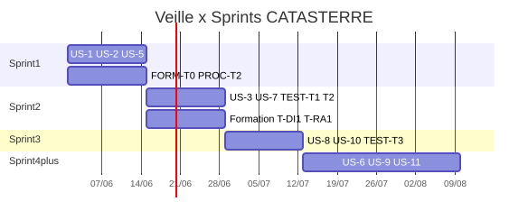

Projet 10 OpenClassrooms · juin 2026 · Résumé de veille.md
svg/.
Constats sectoriels 2025-2026 pour la prise de décision — quatre axes croisés avec le backlog (11 US, 75 SP).





| Thème | Constat clé | Question décision |
|---|---|---|
| Monolithe modulaire | Bounded contexts avant extraction réseau | Modules images/risques/auth/export ? |
| Géo cloud-native | COG, PMTiles, STAC | GeoJSON vs tuiles aujourd'hui ? |
| OpenAPI | Contract-first front/back | Introduire dès Sprint 2 ? |

| Métrique | Seuil indicatif | Outil |
|---|---|---|
| LCP | ≤ 2,5 s | Lighthouse |
| CLS | ≤ 0,1 | Lighthouse |
| INP | ≤ 200 ms | Lighthouse |
| API p95 | À définir après profiling | Actuator / Micrometer |
Principe : mesurer avant d'optimiser (US9-T1).

| Type | User Stories | Sprint |
|---|---|---|
| UX | US-1, US-2, US-3 | S1-S2 |
| Deploy | US-5 | S1 |
| Process | US-7, US-8 | S2-S3 |
| Structurelle | US-6 | S4+ |
| Métier / Luxueuse | US-9, US-11, US-4 | S4+ / reporté |


| Sprint | SP | US | Axes dominants |
|---|---|---|---|
| S1 | 12 | US-1, US-2, US-5 | Perf front · Docker · Dette UX |
| S2 | 12-14 | US-3, US-7, TEST-T1/T2 | A11Y · CI/CD · Formation tests |
| S3 | ~16 | US-8, US-10, TEST-T3 | Env test · Navigateurs |
| S4+ | — | US-6, US-9, US-11 | Architecture · Perf géo |

| US | Titre | Architecture | Performance | Dette | Full-Stack |
|---|---|---|---|---|---|
| US-1 | Style CSS | — | OnPush, NgOptimizedImage | UX | Lint, revue Jorge |
| US-2 | Erreurs | Contrat API | — | UX | Composant unifié |
| US-3 | A11Y | — | — | UX | WCAG AA |
| US-5 | Docker | Conteneurisation | — | Deploy | Multi-stage |
| US-6 | Microservices | Strangler, ACL | — | Structurelle | OpenAPI |
| US-7 | CI/CD | — | Anti-régression | Process | GH Actions, scans |
| US-8 | Env. test | — | — | Parallel run | Smoke tests |
| US-9 | Risque inondation | RiskCalculation | JPA, tuiles | — | Profiling |
| US-10 | Navigateurs | — | @defer | — | Matrice nav. |
| US-11 | Export | Export | Batch JDBC | Luxueuse | API + UI |
Source : veille.md · Documents liés : formation.md · risque.md · backlog.md